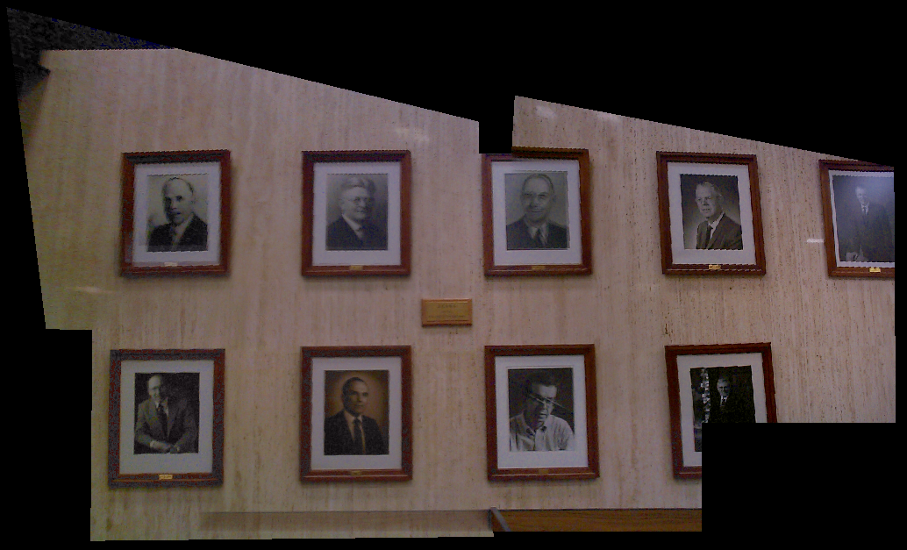

HOMEWORK 3
PRATEEP MUKHERJEE
prateepm@sci.utah.edu
IMAGE MOSAICING
This report is organized as follows. First, we will discuss about how the image warping algorithm
handles some very important details, like image contrast, feathering, computing the canvas size, and cascading.
In the second section, we will discuss how the code structure is organized and how the code can be executed.
Finally, we will provide the results on some image datasets.
IMPLEMENTATION DETAILS
Contrast : Image Contrast of the canvas is normalized to the range of the reference image. This normalization is performed
on all channels, red, green and blue. The method for normalization is described next.
First, we compute the average individually of the three channels of the reference image. Now, for every image in our set excluding the
reference image, we adjust its intensity range such that the contrast-adjusted image now falls within the range of the reference image.
Feathering : Feathering is performed by weighing each pixel in the canvas with its distances to the enclosing images.
pixValue = (pixValue1 * d1 + pixValue2 * d2) / (d1 + d2)
Image Size : The size of the canvas is computed for each image in the set to make sure the output canvas can precisely include
all the images in the set. (xmin, ymin) and (xmax, ymax) are computed using back-projection of
every pixel on the canvas and check if it lies inside the domain of any image in the set.
Cascading : In my algorithm, I use a graph search algorithm to solve the cascading problem. The path-finding algorithm works like this:
it starts with the current image and recurses from the current node until it reaches a frame to which it belongs. There is a parameter "levels", which
makes sure that the path is not greater than the number of images in our set. This algorithm is implemented in fillTransformMatrixList.m .
CODE STRUCTURE
test.m: The main file of the project.
Input : The parameter file (e.g. params.txt)
Output : The mosaic image.
Details : This file is divided into three parts. In the first part, we parse the input parameter file to input the correspondence points(or landmarks) between pairs of images, and the relationship
matrix. In the second part, we compute the corner points of the canvas, using the landmarks. Finally, we transform each pixel of every image onto the canvas using the previously computed transformations.
fillTransformMatrixList.m The path-finding algorithm to solve cascading.
Input : The list of transformation Matrices and the relationship matrix.
Output : The filled relationship matrix.
Details : The path from every image in the set to the reference image. At every step, we multiply the transformation matrices, so that the cumulative product gives us the transformation of every image
in the set to the reference image.
getTransformM.m The path-finding algorithm to solve cascading.
Input : The list of transformation Matrices and the relationship matrix.
Output : The final transformation matrix
Details : SVD decomposition gives us the parameters for the transformation.
computeBounds.m Computes corners of the canvas.
Input : The reference image, set of all images, dimension of points, and the list of transformations.
Output : The minimum and maximum values in each dimension
Details : We compute the homogeneous coordinates for every transformation and compute the bounds from them.
Auxillary functions
isValid.m Check if the co-ordinates fall inside the given bounds.
To run the project, type :
>> test
>> % To change the parameter file change this line:
% fp = fopen(filename,'r');
RESULTS
The top row in each experiment shows the images in our set. The bottom row shows the resulting mosaic.
1) In the first experiment, we use the "planer" mosaic. (Parameter file: params.txt )

2) In the second experiment, we use the "tower" example. (Parameter file: tower.txt )
3) In the third experiment, we use the "sci" example. (Parameter file: sci.txt )
Next, we reduced the number of landmarks to half. This resulted in the following mosaic. Note that, some details go missing,
especially towards the left corner picture, due to lack of landmarked interest points. Also, the canvas dimensions were not entirely
correct, as it cropped some parts of the images with no landmarks (see left-most corner of 1st image).
4) In the third experiment, we use the "building" example. (Parameter file: building.txt )
Next, we reduced the number of landmarks to the theoretical minimum value. This resulted in the mosaic on the right. Note that the mosaicing
algorithm performs well in the positions of the landmarks, which were put at the base of the building and on the road.
However, it completely ignores the rest of the canvas, which do not have significant amount of landmarks.
SUMMARY
In summary, number of location of landmark points does have a significant effect on image mosaicing. In every experiment, we chose around
7-8 manually annoted landmark points. Selection of more landmarks increases the quality of mosaicing. However, this also increases the running time
of our algorithm. On average, our algorithm took ~ 30-45 seconds to run in MATLAB, depending on the size of the images.
Using the theoretical minimum number of control points, we get only the landmarked locations of the images warped, and a blury effect over the rest of the
canvas(as seen in the 4th experiment)